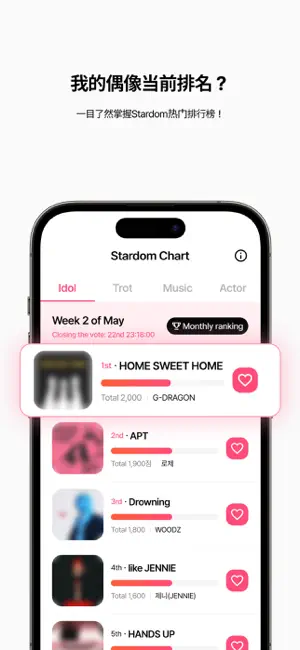

Stardom 的 Star Pass 到底值不值得掏钱？一笔一笔给你算清楚
免费签到、看广告攒星和掏钱买 Star Pass Plus 之间，究竟差了多少？用三类使用强度场景拆解 Stardom 的付费决策，帮你三秒对号入座。
它到底值不值得掏钱？
当初装它的时候是从下载拿的安装包，这是我用 Stardom 三个月以来被问得最多的一个问题。论坛里、粉丝群里，每隔几天就有人抛出来："Star Pass Plus 我到底要不要买？"今天我把这笔账扒开，一条一条算给你看。
免费版到底给了什么
先把基线画清楚——从 Stardom官网的定价页面往下看，它不花钱能玩到什么程度：
每天固定有几次免费投票次数，用完之后，剩下的路只有两条：要么看广告换银星，要么等第二天重置。广告一次给的银星数量不算多，攒够一次 Boost 往往要刷三五条，而且银星还有有效期——广告拿到的星通常只能放 24 到 72 小时，过了就悄悄消失，不留意的话刷了半天等于白刷。
签到、每日任务、Support 投票这些渠道也能攒星，但都走同一条时间轴：签到给的星有效期相对长（7 到 14 天），但攒得慢；Support 投票消耗星不占每日免费次数，是个不错的出口，但投出去的星回不来，本质是个消耗坑。
换句话说，免费版的核心瓶颈不是功能，而是时间成本。你想多投一票、想多 Boost 一次，就得再看一条广告、再多花几分钟手动攒。没有硬门槛卡你，但每一步都在问：你愿意为这颗星等 30 秒吗？

付费版多了什么——Star Pass Plus 的真实价值
Star Pass Plus 是 Stardom 主要的付费订阅档位。核心改动三条：
- 广告自动看——不需要手动点进去等播放结束，银星自动到账。这一条解决的是"重复操作"的疲惫感。
- 银星获取量 x3——同样的时间投入，星翻三倍。
- Boost x3 + 自动消耗临期星——Boost 效率翻三倍，而且最烦人的"广告星临期过期"问题，Plus 能帮你自动消化掉。
没有买断选项，只有按月或按年的订阅。价格我记不清具体数字，具体档位可以翻Stardom文档确认，但折算下来每颗星的成本比手动刷广告便宜得多——这是订阅定价里最鸡贼的地方：它不按"给你多少星"收费，而是按"帮你省多少时间"收费，让你很难直接比较性价比。
三类人算账
轻度用户：每天投 5 票以内，免费版完全够用
如果你只是"每天刷个手机顺便投个票"，每天用掉免费次数就关应用，那付费对你来说纯属浪费。一个月下来你看广告攒的星加起来可能还不够一次 Plus 订阅的零头，时间成本也没高到让你烦躁——反正每天通勤路上也闲着。
结论：永远不用付。 把每天的免费次数用满，Support 投票偶尔补一点，完全够表达心意。
主力用户：每天投 10 到 30 票，时间账开始划算了
这类人是 Star Pass Plus 的目标客户。每天固定有推主要打榜，需要 Boost 冲排名，免费次数用完之后要靠广告补。假设每天刷 6 条广告攒星，每条 30 秒，一天就是 3 分钟，一个月就是 90 分钟——一个半小时的重复劳动。
买了 Plus 之后这 90 分钟直接被省掉，而且星的数量还是原来的三倍。折算下来，每月花的订阅费换来的是 90 分钟时间 + 两倍的总星量 + Boost x3 的效果提升。这个账在打榜关键期特别好使——周末冲排名的时候，你多出来的那批 Boost 可能就是能不能进 Top 10 的差距。
结论：闭眼付。 每月一杯奶茶的钱换一个半小时 + 数据翻倍，没什么好犹豫的。
重度用户：每天投 30 票以上，必须用 Plus
这类人往往是多艺人主推，同时跟进好几个打榜项目，甚至有选秀联动投票要参与。选秀投票是阶段性的，但规则更严——预选、决赛、总决选，每一轮都要大量的星砸进去，而且周期短，攒星速度直接决定你能推多远。
免费版在这个量级下会出现两个致命问题：一是手动刷广告的时间成本高到离谱（每天可能要花 10 到 20 分钟），二是银星有效期管理变成一场噩梦（多批次不同有效期、广告星 24 小时过期，手动追踪 Star History 根本顾不过来）。Plus 的自动处理和 x3 系数在这个量级下不只是"方便"，而是没有它你根本冲不动。
还有个隐性成本：风控。官方明确禁止模拟器和自动化脚本，手动刷没问题但极其消耗精力。Plus 让你在合法合规的前提下把产能拉满，这本身就是一笔安全账。
结论：闭眼付，而且选年付更划算。

替代方案——不付钱有没有别的路
坦白说，Stardom 的付费设计做得挺密，不付钱想走捷径的空间非常有限：
路线一：降低使用频率。 这是最现实的替代方案。把"每天多投几十票"改成"只在关键排名战的时候集中投"，免费攒一两周的星留着关键时刻用。代价是日常排名掉得快，但对轻度支持者来说完全可接受。
路线二：Support 投票当蓄水池。 Support 项目周期长、不消耗每日免费次数，平时攒的星（尤其是临期星）都可以丢去 Support 消耗，相当于一个不花钱的缓冲池。但 Support 不影响主榜排名，只是"用掉了"不是"用好了"。
路线三：等活动。 偶尔 Stardom 会出临时加星活动、签到双倍之类的，这时候集中攒一波能顶平时好几天的量。但活动不常有，而且节奏不好控。
模拟器和脚本不推荐——官方风控分三级处理，模拟器环境检测是红线，触发了账号冷却 24 小时到 7 天不等，严重的直接永久停用，得不偿失。
最终结论：你属于哪类人
总结成一张对照表，三秒对号入座：
| 使用强度 | 日均投票 | 免费版够不够 | 要不要买 Plus |
|---|---|---|---|
| 轻度 | ≤5 | 完全够 | 永远不用 |
| 主力 | 10~30 | 够但累 | 闭眼付 |
| 重度 | ≥30 | 不够 | 必须买，年付更值 |
最后补一句个人感受：我自己用了三个月的 Plus，最大的体验变化不是"投得更多了"，而是"不用盯着 Star History 焦虑了"——自动消耗临期星解决了我最烦的那个痛点。如果你也跟我一样，看完广告攒了一堆星然后忘了用、眼睁睁看着它们过期，那 Plus 对值不值这个问题就已经给出了一半答案。
剩余一些相关资料在三个仓库都可以查看，各取所需：GitHub的主仓库更新最快，Gitee国内访问更顺畅，GitCode是定期同步的备份。三个仓库里的文档目录结构一致，Stardom 相关的说明都按分类归档在对应的子目录下。